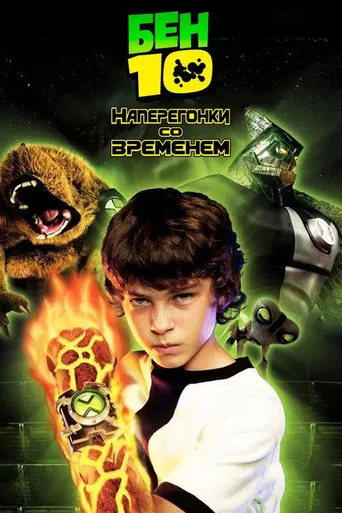

Бен 10: Наперегонки со временем 2008
Бену Теннисону всего 10 лет, но благодаря Омнитриксу он может превращаться в разных пришельцев и защищать людей от опасностей. Вернувшись после летних приключений в Беллвуд, Бен пытается снова стать обычным школьником, однако вскоре сталкивается с загадочным врагом, способным управлять временем. Он намерен использовать древнее устройство под названием Руки Армагеддона, чтобы открыть временной разрыв и вернуть на Землю свой народ. Теперь Бену, его кузине Гвен и дедушке Максу предстоит остановить злодея и не позволить ему изменить судьбу целого мира.
Открыть в каталогеДанные и постеры принадлежат их правообладателям. Этот продукт использует TMDB API, но не одобрен и не сертифицирован TMDB.